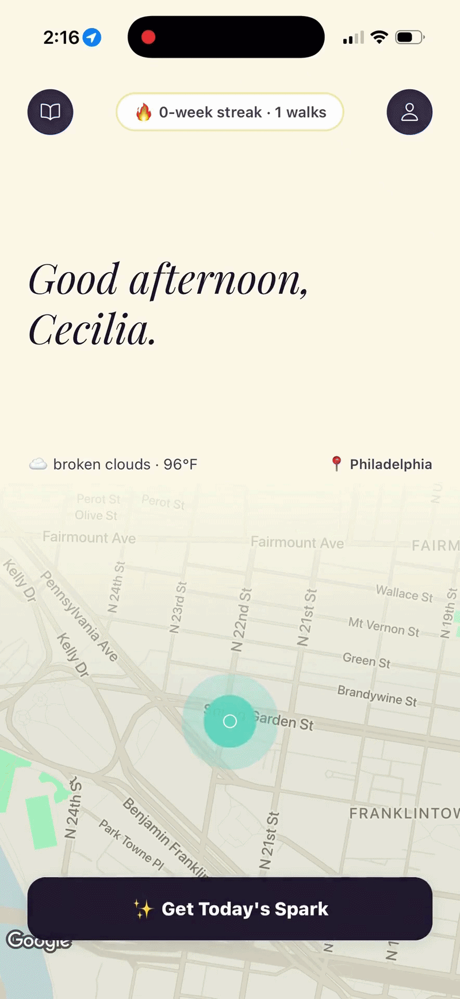
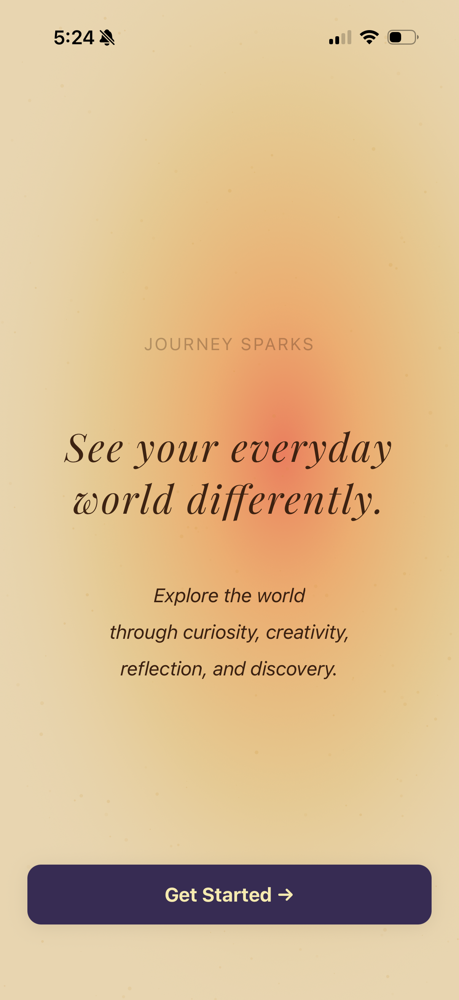
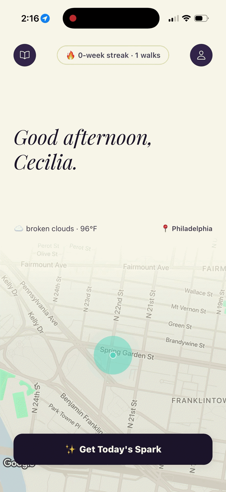
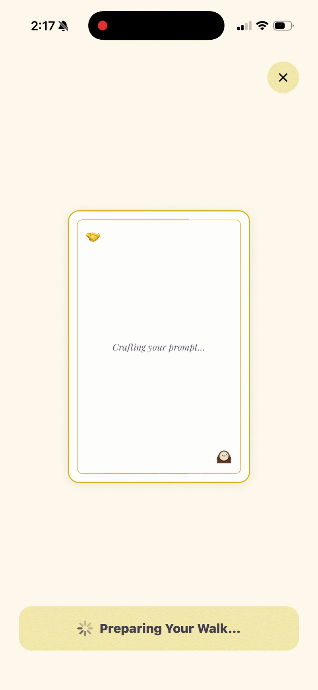
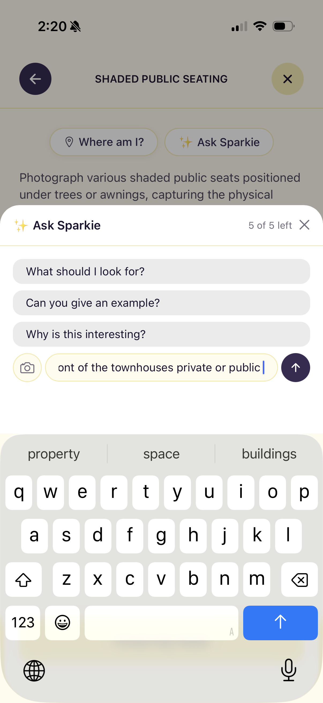
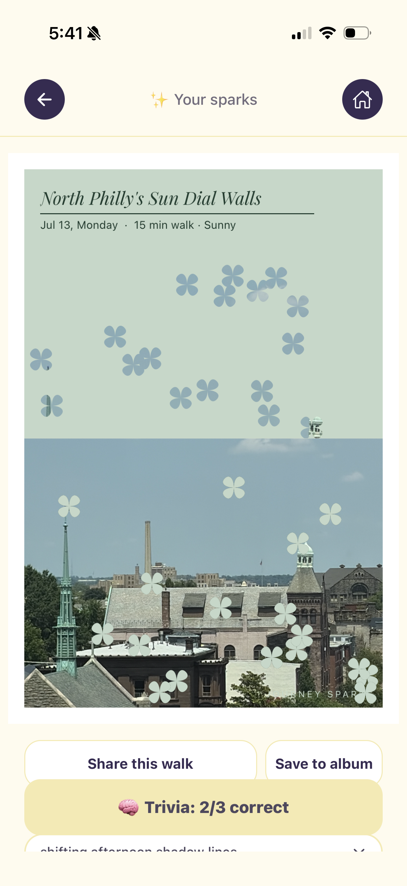
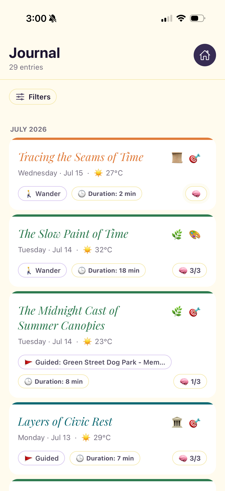

Turning Every Walk Into a Learning Moment
An AI powered EdTech and lifestyle mobile app that transforms daily walks into moments of genuine discovery, with a personalized companion that sparks curiosity and captures memories.
Note: The app is currently under beta on IOS TestFlight.

Type: Personal product, built and shipped
Role: Product Manager and Co-Founder
Timeline: Ongoing
Tools Used: Figma, Cursor/Claude, User Interviews, PRD, Product Roadmap, AI/LLM Integration, Competitive Analysis
Objective: Define the product vision, prioritize the AI feature set, and bring to market a mobile experience that makes informal outdoor learning effortless and habitual.
Most people take daily walks without a second thought. A lot of people are walking while doomscrolling on their phones or thinking about their to-do lists. Yet walks are rich with delights and discoveries: local history, nature, architecture, and unexpected encounters are everywhere.
The problem is the lost curiosity in a digital world or your wonder about a building, a plant, or a street name gets unanswered. That moment of genuine interest is lost.
Existing apps either gamify exercise or deliver generic content. None of them treat the walk itself as a learning context and none of them adapt to what you are actually curious about.
User interviews surfaced a consistent pattern: people described moments of curiosity during walks that they never followed up on because it felt like too much effort to stop, search, and context switch.
Secondary research in learning sciences confirmed the opportunity: experiential and place based learning produces stronger retention and intrinsic motivation than screen based instruction.
Informal learning during everyday activities is one of the most underleveraged channels in EdTech.
Journey Sparks turns the walk into the curriculum. The product meets users in the moment of curiosity, delivers a bite sized task and a set of challenges afterwards that are tied to their exact location.
The core product bet: if we reduce the effort of satisfying curiosity to near zero, learning becomes a byproduct of a habit people already have.
AI is the enabling technology, but the product strategy is about behavior design, not technology showcase.
Decision 1: Companion framing over utility framing
Tested both a utility framing (walking guide) and a companion framing (curious friend). Companion framing drove significantly higher emotional engagement and return intent in prototype testing. The splash screen tone, the aesthetic journal after walk, and the rewards from discoveries all came from this decision.

Decision 2: AI personalization over curated content
Chose to build an LLM powered companion rather than a content library. Curated content would never match the specificity of what a user sees in front of them. Users pick their topic (Cities and Architecture, Nature, etc.) and exploration mode (Wander, Guided, Target), and the AI generates a mission for their exact location. The tradeoff was higher technical complexity for dramatically higher relevance.

Decision 3: Discovery focused, not general exploration
Scoped down the core flow from a set of tasks to one mission per walk to maintain a clear use case and avoid feature bloat. This kept the product focused and aligned with the health and lifestyle positioning, opening a second acquisition channel beyond EdTech.

Decision 4: Ask Sparkie as an in-walk AI layer
Added a contextual AI prompt layer mid-walk so users could go deeper on any curiosity in the moment. Rather than switching apps to search, users get curated follow-up questions from Sparkie ("Why is this interesting?" "Tell me something surprising") that keep them in the experience. This reinforced the companion framing and increased time in app per session.

Decision 5: Memory capture and reflection layer
Added a memory capture screen after early user feedback showed that the discovery moment felt ephemeral. Users wanted to come back to their sparks. The post-walk screen lets users add final thoughts, log how they felt, and save the journey. This became a core retention driver and differentiator from generic walking apps.

Decision 6: Journal as a long-term habit anchor
Built a persistent journal so every walk accumulates into a record of curiosity over time. Each entry shows the topic, mode, duration, weather, and emotional tags from that session. A named journey with AI generated notes (like "Morning Light's Painted Breath") transforms a routine walk into something worth remembering, reinforcing the return habit.

Phase 1 (Shipped): Core walk companion with AI generated location insights, memory capture, and personalized curiosity profile.
Phase 2: Social layer, sharing sparks with friends and discovering what others found nearby.
Phase 3: Institutional partnerships with schools and parks for structured experiential learning programs.
Habit Formation: Target 3+ walks per week with the app active among retained users within 30 days.
Curiosity Engagement Rate: Percentage of walks where the user interacts with at least one spark, target 70%.
Memory Return Rate: Percentage of users who revisit their memory collection within 7 days, a signal of emotional connection to the product.
30 Day Retention: Target 40% monthly active user rate, higher than typical consumer apps given the daily habit context.
Journey Sparks is the project where I learned what it means to own the full product lifecycle: from the initial insight through research, prioritization, spec writing, working with engineers, and iterating based on real user behavior.
The biggest lesson was that the product framing matters as much as the features. The same AI capability felt like a gimmick in utility mode and felt genuinely delightful in companion mode. Getting that right required user research, not intuition.